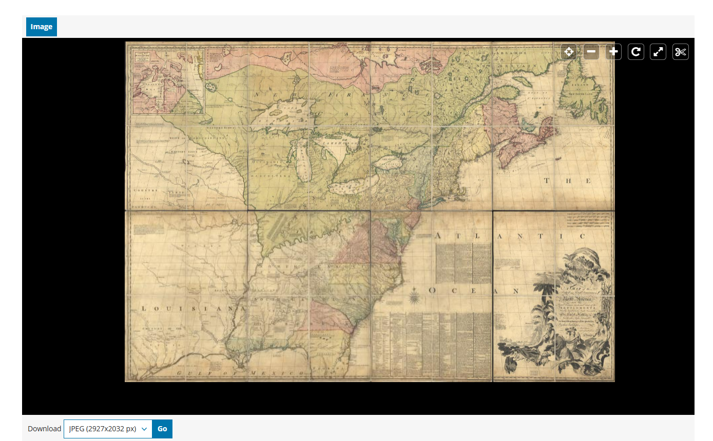

An evaluation of geospatial information services in the Library of Congress Geography & Map Division, focusing on system infrastructure, usability, challenges, and ethical considerations. This project examines how the division functions as a large-scale geospatial information system and how effectively it supports users within both public and research contexts.
Mission:The Geography and Map Division (G&M) of the Library of Congress provides cartographic and geographic information for all parts of the world to Congress, federal agencies, state and local governments, the scholarly community, and the general public. Staff, including reference librarians, specialists, and technicians, connect users to one of the largest cartographic collections in the world.
Users: Staff, librarians, specialists, technicians, academic researchers, and the general public.
Services: The division provides onsite reference and scanning services in the map and atlas reading room, supports geospatial inquiries from Congress, and offers online reference services for remote users. It also provides access to digital collections, research guides, and geospatial tools.
Visit the Geography & Map Division: Library of Congress Geography & Map Division
The system draws from extensive cartographic and geospatial collections, including the Sanborn map collection, county land ownership maps, fire insurance maps, panoramic maps, and materials documenting European global expansion. These collections represent both historical and modern geographic data sources.
These materials are processed through digitization, metadata creation, and cataloging systems. Maps are scanned, described, and organized into searchable formats. In some cases, geospatial technologies are used to enhance access, such as georeferencing or integration into digital platforms.
Processed materials are made available through digital map collections, research guides, and finding aids. These outputs allow users to locate, interpret, and use geographic information for research and analysis.
The primary interface is the Library of Congress website, which provides access to collections through search tools, digital portals, and navigation systems. Additional interfaces include the Geography & Map Division blog and the Geospatial Application Hub, which offer examples of GIS use, educational content, and access to interactive tools.
Explore the Geospatial Application Hub: Geospatial Application Hub
Read GIS-related blog content: Library of Congress Maps & GIS Blog

Figure 1: Example of Library of Congress map interface.
The system is relatively straightforward when accessed through the Geography & Map Division page; however, its effectiveness depends on the user’s familiarity with navigating large digital collections.
While the system appears usable for individuals familiar with research tools, it may present challenges for users without prior experience in navigating large digital collections or working with geospatial data.
The system is designed to support a wide range of users, from the general public to professional researchers. However, the depth and scale of the collections suggest that more experienced users may benefit most from the available tools.
Privacy: Geospatial data can include location-specific information that may reveal sensitive details, especially when combined with other datasets.
Bias: Historical maps may reflect outdated perspectives, including colonial or incomplete representations of geographic spaces.
Data Use: Without proper context, users may misinterpret spatial data or draw inaccurate conclusions from maps.
These considerations highlight the role of libraries not only as providers of geospatial data, but also as educators responsible for guiding users in its responsible and informed use.
The Library of Congress Geography and Map Division demonstrates how geospatial services can function as a large-scale information system within a library setting. Through extensive collections, digital platforms, and user support services, the division provides access to a wide range of spatial information for both specialized researchers and the general public. At the same time, this case study highlights the challenges associated with managing and delivering geospatial information at scale. Issues related to system complexity, user accessibility, and the need for specialized knowledge illustrate that providing access does not always equate to ease of use. Additionally, ethical considerations such as data privacy, bias in historical maps, and responsible interpretation remain important factors in supporting GIS services. Overall, the Geography and Map Division reflects both the potential and limitations of GIS as a library information service. As geospatial technologies continue to evolve, libraries will play an increasingly important role in supporting access, interpretation, and responsible use of spatial data.